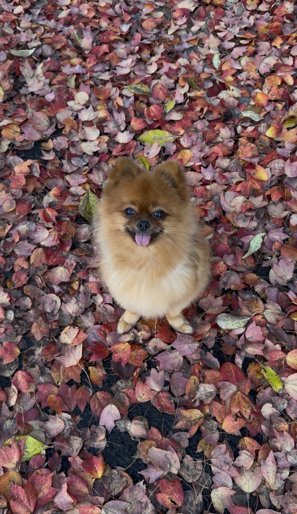
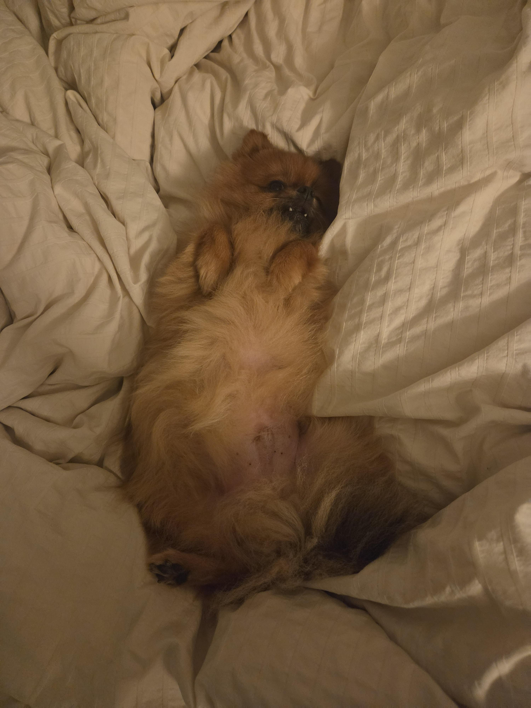
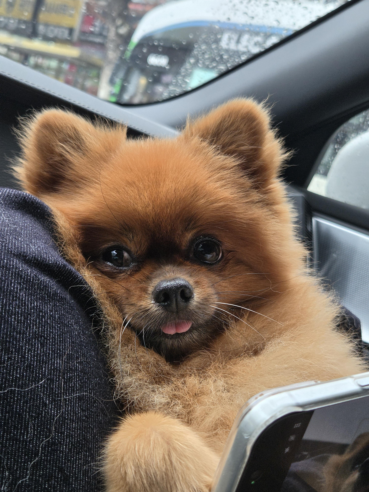
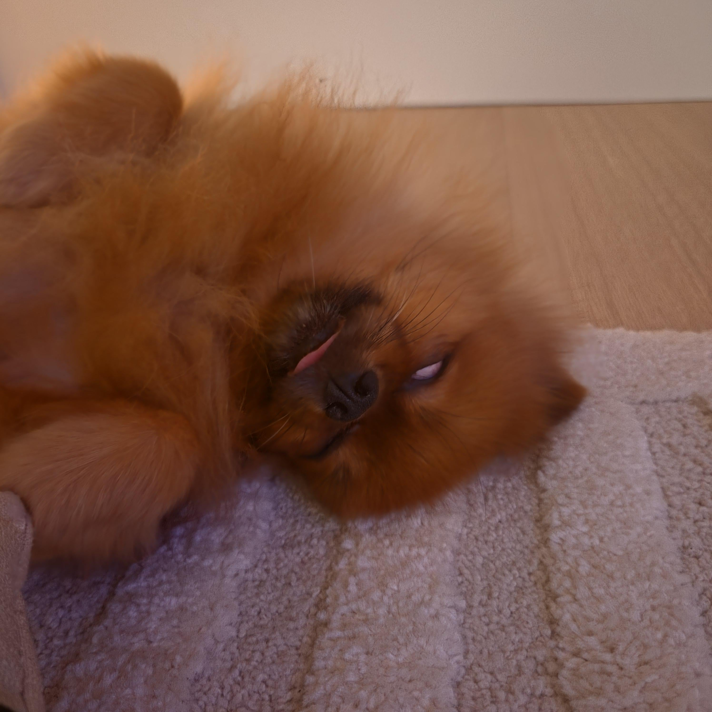
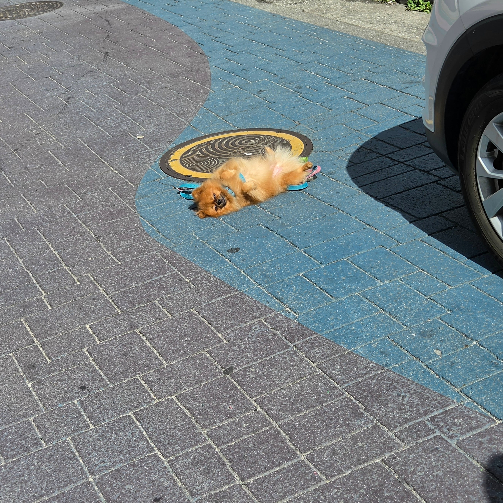
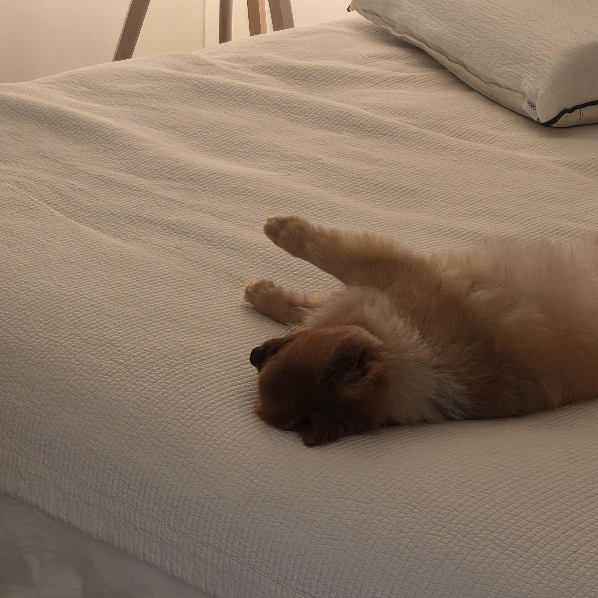
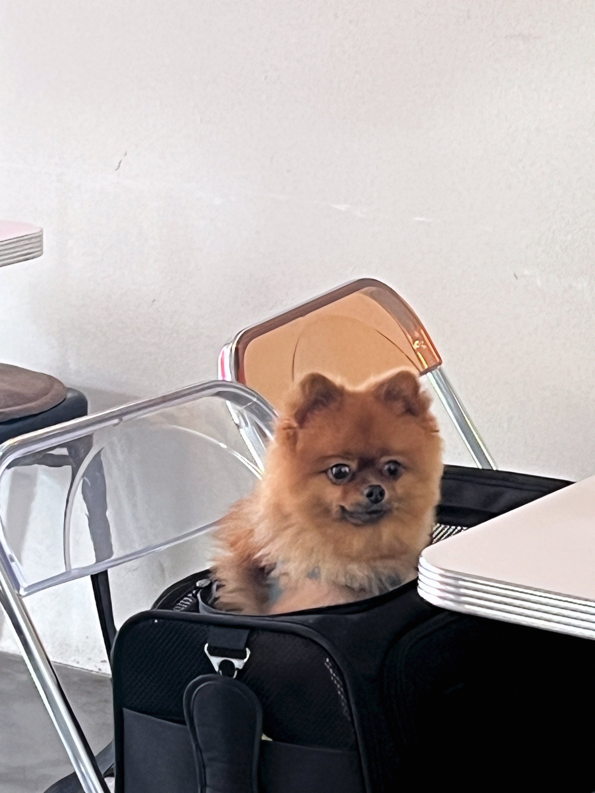

애 왜 낙엽만 보면 못들어가 안달임

애 왜 맨날 다리 사이에서 못움직이게 일케 누움

애 왜 나이들수록 혓바닥이 나옴

이거 왜 잘때 눈 뒤집음

산책하다 누워버리는건 왜그럼

잘때 왜 다리 들고잠

다 봤으면 퇴장 하도록

애 왜 낙엽만 보면 못들어가 안달임

애 왜 맨날 다리 사이에서 못움직이게 일케 누움

애 왜 나이들수록 혓바닥이 나옴

이거 왜 잘때 눈 뒤집음

산책하다 누워버리는건 왜그럼

잘때 왜 다리 들고잠

다 봤으면 퇴장 하도록
뭇생겼어!!!
10장 채워 아니 20장 채우ㅓ!!!!
얘
걷는거 힘든데 산책은 하고싶으니 안고 걸어죠
라는뜻